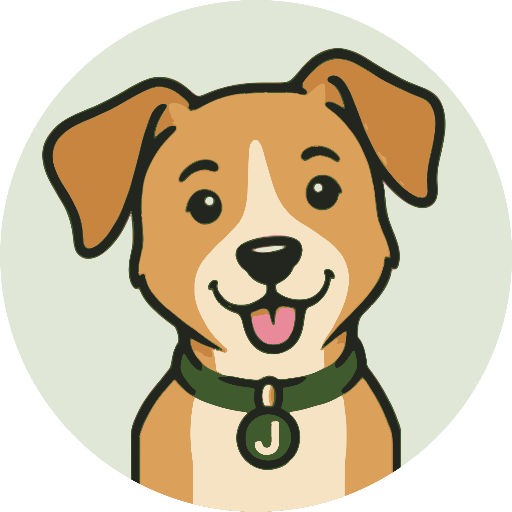
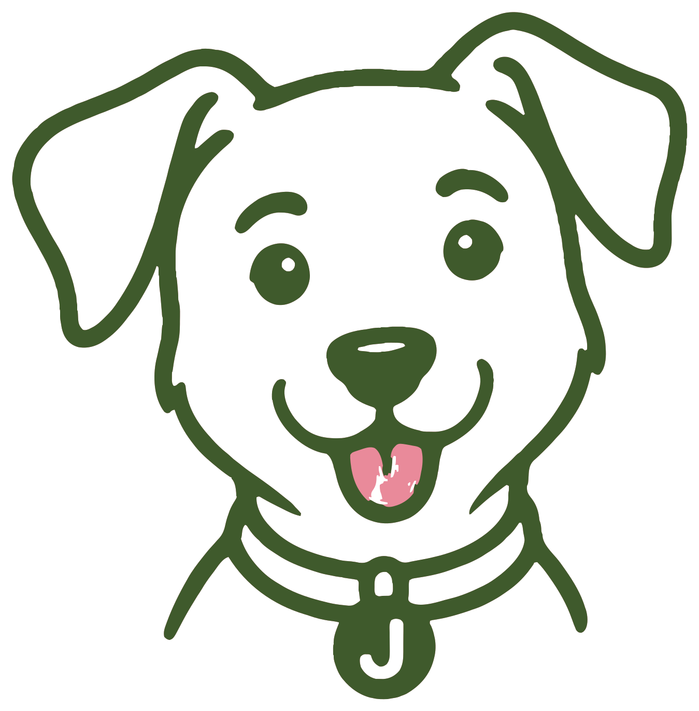
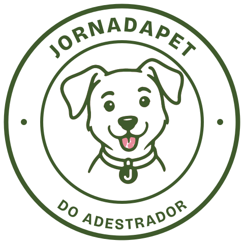
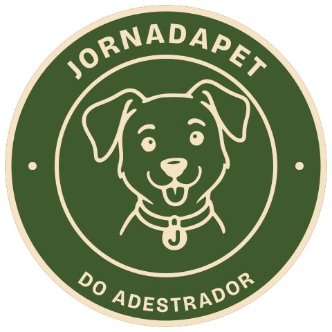
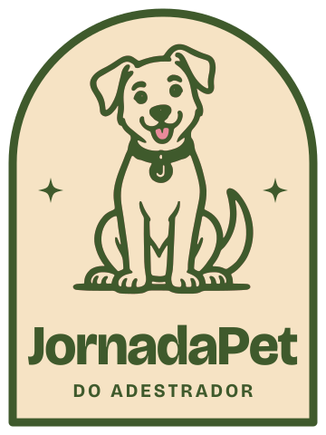
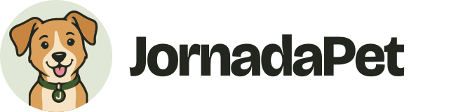
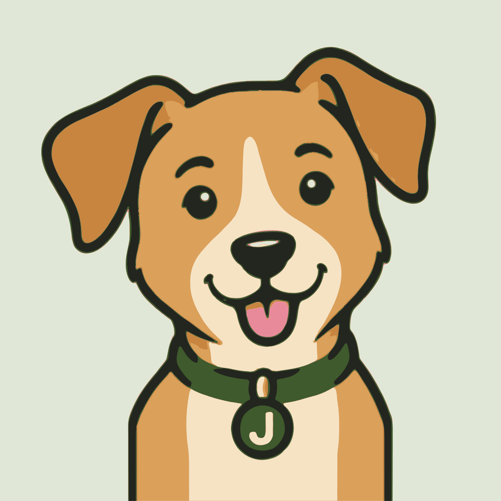
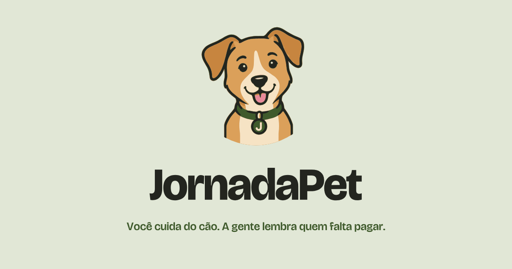
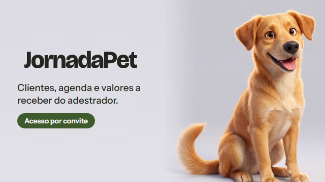

NT-002 · 11/10/2026
A marca da JornadaPet
O mascote é um vira-lata caramelo de coleira oliva. A plaqueta da coleira leva o J da JornadaPet. Ele aparece em três formas: a cabeça colorida (avatar e ícone), o traço numa cor só (selos, carimbo, bordado) e o logotipo com o nome em Bricolage.
Arte de referência gerada por IA a partir dos esboços da NT-002, limpa e vetorizada com as cores exatas da paleta. Para a versão definitiva, o recomendado é um ilustrador redesenhar sobre ela.

As peças








Cores
As cores do mascote se somam à paleta da página (DESIGN.md). O oliva continua sendo a única cor de ação. Caramelo, orelha e creme são de ilustração e nunca carregam texto.
#3f5a2c coleira, traço, ação#e1e7d6 fundo do avatar#dba05a pelo#c7853f orelhas, sombra#f6e3c4 focinho, peito, selo#e98a9a só a língua#23251f contorno, nomeNos canais
Telegram
WhatsApp Business e Instagram

Página: tamanhos e aba
Imagem de compartilhamento · 1200×630

Descrição do bot no Telegram · 640×360

Arquivos
Os SVGs são a fonte de tudo: o texto já está em curvas, então não dependem de fonte instalada. Os PNGs são gerados a partir deles por NT-002-assets/ferramentas/exportar.sh.
| Uso | Arquivo | Tamanho |
|---|---|---|
| Foto do bot (Telegram, BotFather) | png/avatar-telegram-whatsapp-640.png | 640×640 |
| Imagem da descrição do bot | png/telegram-descricao-640x360.png | 640×360 |
| WhatsApp Business, foto de perfil | png/avatar-telegram-whatsapp-640.png | 640×640 |
| Instagram, foto de perfil | png/avatar-instagram-1080.png | 1080×1080 |
| Instagram, posts e destaques | png/selo-redondo-1080.png, png/selo-redondo-oliva-1080.png, png/selo-arco-810x1080.png | 1080 / 810×1080 |
| Favicon | svg/cabeca-colorida.svg, png/favicon-32.png, png/favicon-16.png | SVG, 32, 16 |
| Ícone da tela inicial (iOS) | png/apple-touch-icon-180.png | 180×180 |
| Ícones do manifest (Android) | png/icon-192.png, png/icon-512.png | 192, 512 |
| Imagem de compartilhamento (og) | png/og-1200x630.png | 1200×630 |
| Menu e rodapé da página | svg/logotipo-horizontal.svg, svg/logotipo-horizontal-escuro.svg | vetor |
| Nome sozinho | svg/nome.svg, svg/nome-escuro.svg, svg/nome-oliva.svg | vetor |


Regras de uso
Faça
- Use a cabeça colorida sobre sálvia em todo avatar redondo.
- Use o traço numa cor só (oliva ou creme) em carimbo, adesivo e bordado.
- Mantenha a coleira oliva e a plaqueta do J em toda versão do mascote.
- Escreva "JornadaPet" junto, com P maiúsculo, no feminino ("a JornadaPet").
- Deixe em volta do logotipo um respiro de pelo menos a altura do J.
Não faça
- Não use azul na marca: ela some dentro do Telegram.
- Não ponha texto em caramelo, orelha ou creme sobre fundo claro.
- Não use o selo redondo abaixo de 96px: o texto fica ilegível.
- Não estique, gire ou troque as cores do mascote.
- Não use foto de cão de banco de imagem no lugar do mascote.